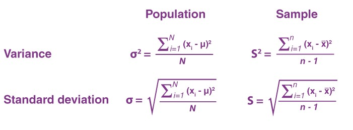

Variance and Standard Deviation are one of the most important measures of distribution
in Statistics.
Variance measures how each data point is away from the mean.
Standard Deviation is derived from the variance, and it measures the Average position of data points from the mean.
In Statistical Research, comparing the Variance and Standard deviiation within or between groups can really help us assess group differences.
Variance measures how each data point is away from the mean.
Standard Deviation is derived from the variance, and it measures the Average position of data points from the mean.
In Statistical Research, comparing the Variance and Standard deviiation within or between groups can really help us assess group differences.
Table of Contents
conclusion
other references